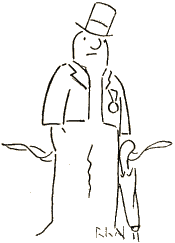

„Inter la homoj li estis nur homo
Nerimarkita en fluo de l' viv' ...“
* * *
Estis modesta nur neĝa atomo
Treme sidanta sur montodekliv';
Tiam okazis, ke vento kaprice
Blovis sur ĝin kun afabla obstin'; ―
Tiel la vento kelkfoje ofice
Vojon elektas de nia destin'.
Nia atomo fariĝis neĝero,
Kiun la vento tenadis en rul';
Vigle malsupren! ― kaj antaŭ vespero
Nia neĝero jam estis neĝbul'.
Knaboj ĝin trovis sekvantan matenon
Ĉe la piedo de l' monto kaj plu
Rule ĝin puŝis sur ludoterenon,
Kie daŭriĝis de l' bul' evolu'.
Mire la knaboj pri ĝia konturo
Ĝojis, ― kaj lerte el tiu neĝkvant'
Baldaŭ leviĝis en ombro de muro
Homomajeste la neĝogigant'.
Baskojn de l' frako vivige agitis
Vento petola tra vintra pejzaĝ';
Du karbopecoj perfekte imitis
Homan rigardon en lia vizaĝ'.

Brave minace, kun pluvoombrelo,
Firme li staris sur piedestal';
Jam rekompence pro longa fidelo
Sur lia brusto orbrilis medal'...
Nun fanfarone li levis la nazon,
Nazon imponan en form' de kukurb',
Ĉar por fieri li havis okazon:
Venis aklami lin tuta la urb'.
Ĉiuj admiris la belan statuon,
Rime prikantis lin moda poet',
Kelkaj eĉ havis kun li intervjuon,
Kiun (kun bildoj) publikis gazet'.
Tiam li estis la plej populara
Homo de l' urbo, ― li estis idol',
Tiel, ke burĝo eĉ laŭdoavara
Diris: „Al tiu nur mankas parol'!“
Iun matenon ― (klarigu laŭvole
Tian miraklon, ― ĝi estas ja fakt') ―
Nia neĝhomo diskutis parole
Kun admirantoj pri nova kontrakt':
„Ĉar disvastiĝis tra l' mond' mia gloro,
Kial modesti en ombro de mur'?
Kadro pli brila el suno kaj oro
Bone konvenus al mia statur'.“
Certe, li pravis, ― kun mil priatentoj
Oni lin ŝovis ĝis suna teras'...
* * *
Kaj post tri tagoj nur kotaj fragmentoj;
Restis memore pri pompa neĝmas'.